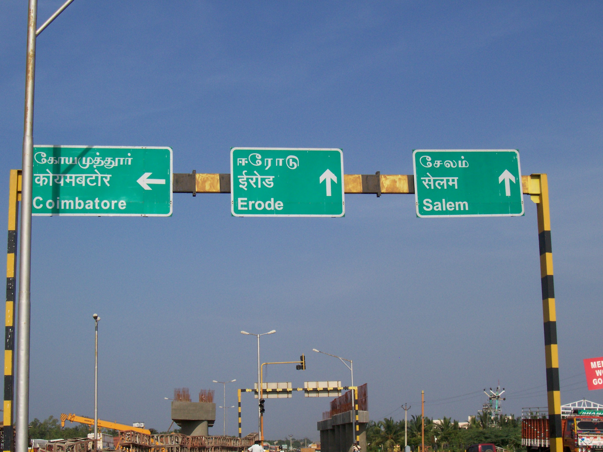
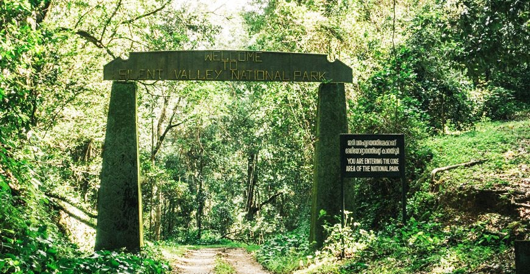
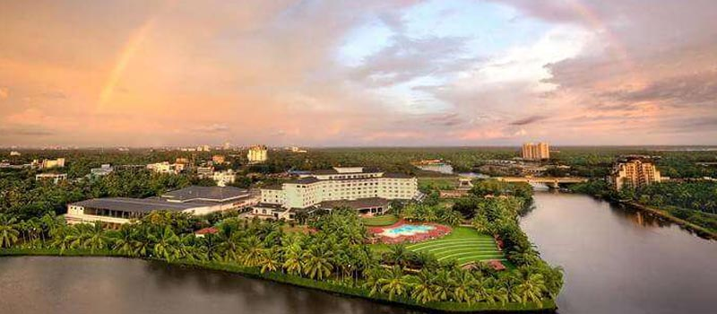
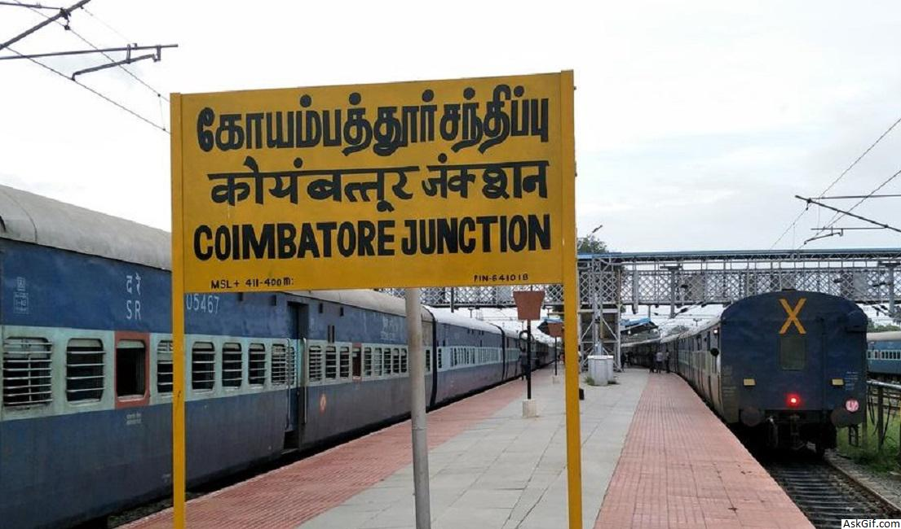
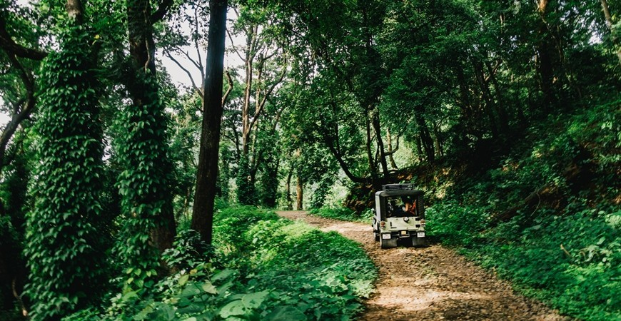
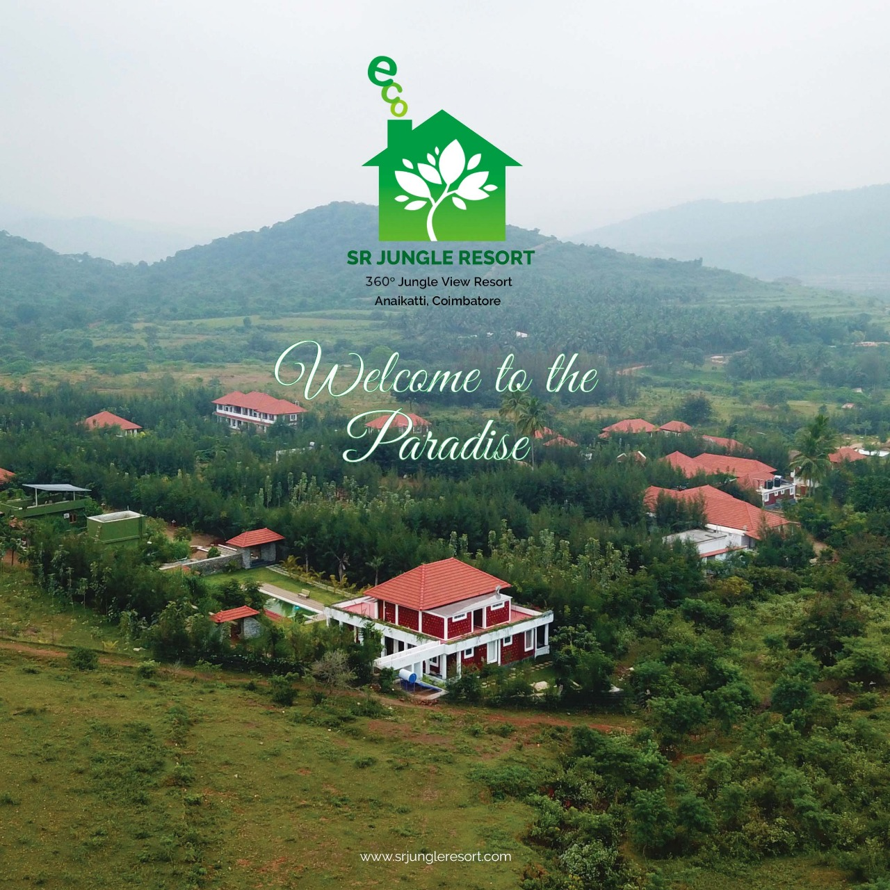
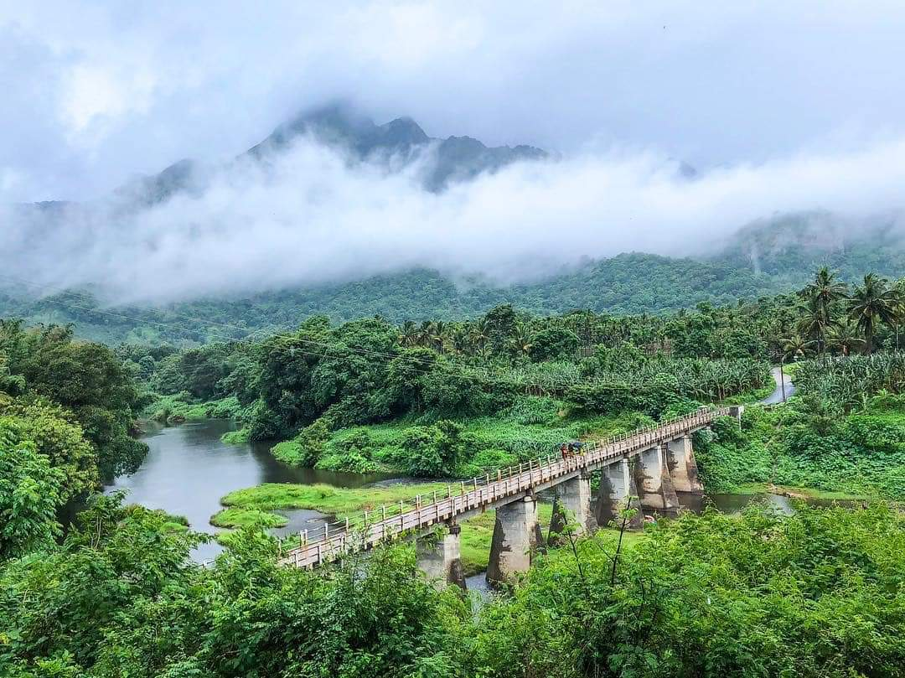
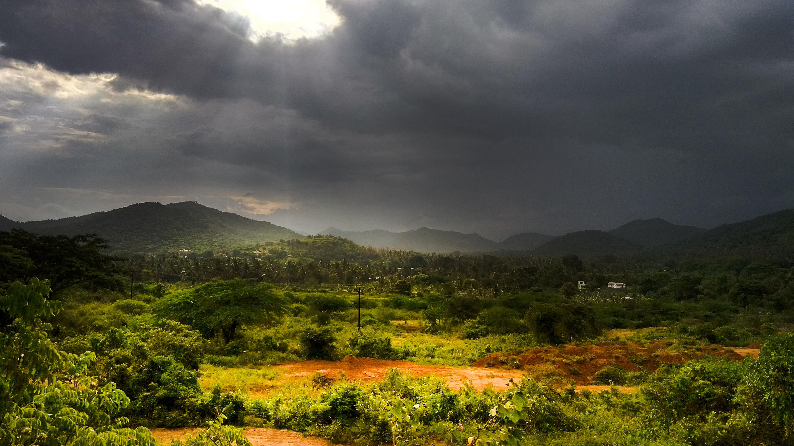

The Adiyogi statue is a 34-metre tall (112 ft), 45-metre long (147 ft) and 25-metre wide (82 ft) steel statue of Shiva with Thirunamam at Coimbatore, Tamil Nadu. It is recognized by the Guinness World Records as the "Largest Bust Sculpture” in the world. Designed by Sadhguru Jaggi Vasudev, it weighs around 500 tonnes (490 long tons; 550 short tons).Adiyogi is located at the Isha Yoga Center. Its height, 112 ft, symbolizes the 112 possibilities to attain to moksha (liberation) that are mentioned in yogic culture, and also the 112 chakras in the human system.A linga called Yogeshwar Linga was consecrated and placed in front of the statue.


2022
The GEDEE CAR MUSEUM, the only classic car museum of its kind located in Coimbatore, Tamilnadu, South India, has a collection of unique cars not to be seen anywhere else in India. The cars are a private collection of G D Naidu Charities, a social trust founded by late Sri. G D Naidu of Coimbatore, who was a renowned inventor, educationalist and philanthropist of his time.

1885
Anamalai Tiger Reserve is a pristine 958.59 sq.km reserve of tropical jungle, shola forest and grassland rising to 2400m and spilling over the Western Ghats into Kerala between Kodaikanal and Coimbatore. This tiger reserve is home to all kinds of exotic endemic wildlife, much of it rare and ensuccessed – including leopards and around 30 elusive tigers, though you’re much more likely to see lion-tailed macaques, peacocks, langurs, spotted deer and elephants, or crocodiles.Anamalai Tiger Reserve is carved out of the Tamil Nadu portion of the Anamalais. The Tamil Nadu part of the reserve is called as Anamalai Tiger Reserve (ATR). It lies South of the Palakkad gap in the Southern Western Ghats. Geographically it is located between the longitudes 76o and 77o E and latitudes 10o and 10o N. The Anamalai Tiger Reserve falls within the Western Ghats mountain chain of South West India, a region designated as one of 25 Global Biodiversity Hotspots. The biogeographical classification of the country includes Western Ghats which are considered as one of eight “hottest hot spots”. The Tiger Reserve falls in four revenue taluks namely; Pollachi, and Valparai of Coimbatore district and Udumalpet of Tiruppur District and Kodaikanal taluk in Dindigul district in the State of Tamilnadu.


Developed by D.VASANTHA VARMA,B.SANCHIT REDDY,CH.SREE CHARAN
Coimbatoreis also known as Kovai or Covai is one of the major metropolitan cities in the Indian state of Tamil Nadu. It is located on the banks of the Noyyal River and surrounded by the Western Ghats. Coimbatore is the second largest city in Tamil Nadu after Chennai and the 16th largest urban agglomeration in India as per the census 2011. It is administered by the Coimbatore Municipal Corporation and is the administrative capital of Coimbatore District. In 1981 Coimbatore formed as third municipal corporation in Tamil Nadu after Chennai and Madurai. Podanur Junction is the oldest Railway station in Coimbatore City. The city is one of the largest exporters of Jewellery, Wet grinders, Poultry and Auto Components; the "Coimbatore Wet Grinder" and the "Kovai Cora Cotton" are recognised as Geographical Indications by the Government of India. Being a hub of textile industry in South India, the city is sometimes referred to as the "Manchester of South India".[13] It was ranked the 7th best city in India in the Ease of Living index 2020. The region around Coimbatore was ruled by the Cheras during Sangam period between the 1st and the 4th centuries CE and it served as the eastern entrance to the Palakkad Gap, the principal trade route between the west coast and Tamil Nadu. Coimbatore was located along the ancient trade route that extended from Muziris to Arikamedu in South India. The medieval Cholas conquered the Kongu Nadu in the 10th century CE. The region was ruled by Vijayanagara Empire in the 15th century followed by the Nayaks who introduced the Palayakkarar system under which Kongu Nadu region was divided into 24 Palayams. In the later part of the 18th century, the Coimbatore region came under the Kingdom of Mysore and following the defeat of Tipu Sultan in the Anglo-Mysore Wars, the British East India Company annexed Coimbatore to the Madras Presidency in 1799. The Coimbatore region played a prominent role in the Second Poligar War (1801) when it was the area of operations of Dheeran Chinnamalai. In 1804, Coimbatore was established as the capital of the newly formed Coimbatore district and in 1866, it was accorded municipality status with Robert Stanes as its chairman. 24 November used to be Coimbatore Day, say those familiar with the history of Coimbatore.The city experienced a textile boom in the early 19th century due to the decline of the cotton industry in Mumbai. Post - Independence, Coimbatore has seen rapid growth due to industrialisation including the introduction of 3 malls in major locations. Coimbatore was ranked the best emerging city in India by India Today in the 2014 annual Indian city survey. The city was ranked fourth among Indian cities in investment climate by Confederation of Indian Industry and 17th among the top global outsourcing cities by Tholons. Coimbatore has been selected as one of the hundred Indian cities to be developed as a smart city under Prime Minister Narendra Modi's flagship Smart Cities Mission. Coimbatore was rated as one of the safest cities in India for women according to National Crime Records Bureau report in 2015.

Coimbatore was coveted by the Mysore sultans as well as British troops during the Anglo-Mysore Wars.The city was taken by the forces of the British East India Company in 1768 but were forced to abandon it due to treachery.Colonel Fullarton occupied the city in 1783 but later returned to Tipu Sultan as per the Treaty of Mangalore.At the beginning of the Third Mysore War, Coimbatore was, once again, taken by the British.Tipu Sultan besieged the city twice and repulsed in the first, he was successful in the second and Coimbatore surrendered in October 1791. The commanders of the garrison, Lieutenant Chalmers and Lieutenant Nash were taken as prisoners to Seringapatnam.Coimbatore fell to the British at the end of the Third Mysore War but was restored to Tipu Sultan at the cessation of hostilities.Coimbatore was eventually annexed by the British on the defeat and death of Tipu Sultan in 1799. Coimbatore was taken by the Polygars in 1800 and was an important stronghold in the Polygar Wars. It was made capital of Coimbatore district in 1865.
STATE-102
COLLECTOR OFFICE-04222301320
CALL CENTER PHONE NUMBERS-